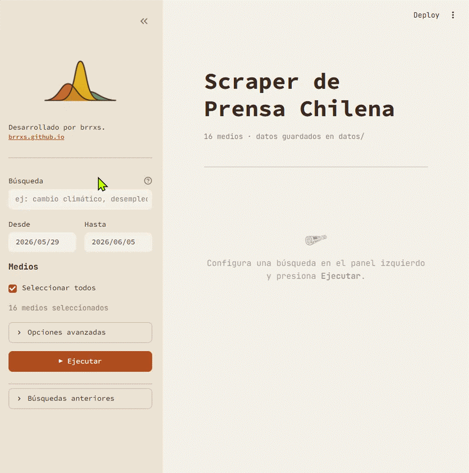

PressCL
Overview
PressCL is a Chilean news search application that lets users query 16 major national outlets simultaneously using keywords and date ranges, then download the results as structured datasets — no coding required. It targets researchers, journalists, and analysts who need to collect press coverage at scale without building a scraper from scratch.
Repository: github.com/brrxs/PressCL ↗

Context
Systematic press monitoring in Chile has historically required either institutional subscriptions to expensive clipping services or hand-built scrapers that break every time an outlet redesigns its site. PressCL was built as a practical alternative: a single tool that covers the major news landscape and returns clean, analysis-ready data.
The project builds on prior open-source work in the Chilean media data space, including datamedios (socialtec-cl) and prensa_chile by Bastián Olea, and packages that infrastructure into a no-code desktop interface for Windows.
How It Works
The application searches across 16 outlets including Biobío Chile, CNN Chile, Emol, and T13. For each source it uses the outlet's native search endpoint when one is available; otherwise it falls back to crawling category feeds and filtering locally by keyword and date. Requests are rate-limited to 1.5–3.5 seconds per page per outlet to avoid overloading servers.
On Windows, setup requires Python 3.10+ installed with the "Add Python to PATH" option enabled.
Running setup.bat installs all dependencies and creates a desktop shortcut —
after that, launching PressCL opens the search interface without touching a terminal.
# What the scraper captures per article
{
"title": "Article headline",
"body": "Full article text",
"subtitle": "Deck or standfirst",
"date": "YYYY-MM-DD",
"source": "Outlet name",
"url": "https://...",
"scraped_at": "ISO 8601 timestamp",
"query": "Search term used"
}Output
Each article is exported with eight fields: title, body text, subtitle, publication date, source outlet, URL, scraping timestamp, and the search query that retrieved it. Results can be downloaded as CSV or Parquet — Parquet is preferred for large queries as it preserves data types and compresses well.
Status & Notes
This is an actively used personal project without a formal maintenance schedule. Outlet HTML redesigns can break individual scrapers; issue reports are welcome and pull requests are reviewed as available. The rate-limiting and fallback logic aim to make the tool resilient to partial failures — if one outlet's endpoint changes, the rest continue working.